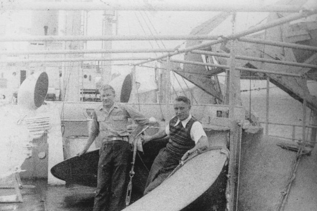
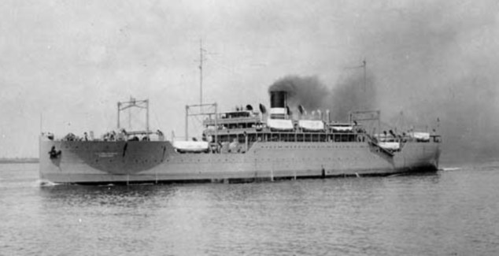
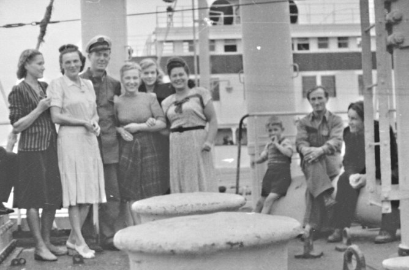
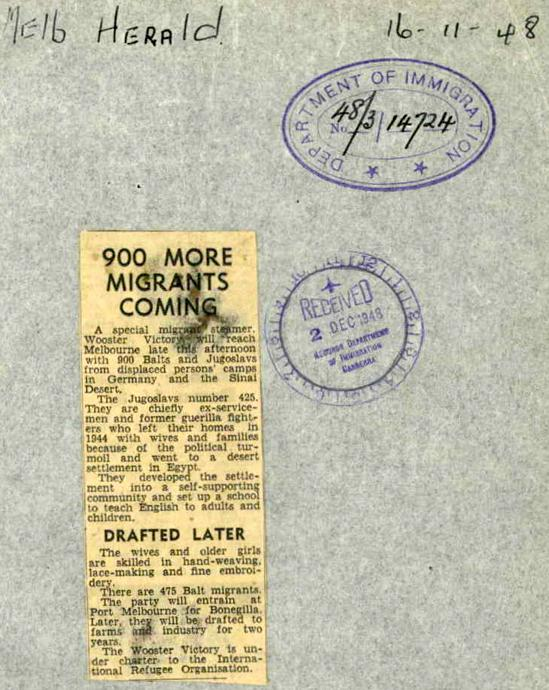

In 1948 Mum and Dad were screened by the International Refugee Organization (IRO) and subsequently accepted for resettlement in Australia under the Displaced Persons Mass Resettlement Scheme which was similar to other schemes such as Britain's European Voluntary Workers scheme.
Eligibility for selection was based initially on standards of age, physical fitness and the ability to do manual work. At first, Australia expressly targeted single Baltic people. However, as the scheme progressed, and this limited source dried up, the target groups widened.
All applicants within the worker age limits under this scheme undertook to remain in the employment found for them by the Commonwealth for a period of two years from the date of their arrival, and their continued residence in the Commonwealth was subject to their observing this undertaking .... men had been recruited to work as labourers and unskilled workers, women as domestics, nurses and typists. Generally, any professional qualifications and technical skills the DPs possessed were ignored.
6. okt. Helēna dabuja bēdu vēsti kad netiek kopa ar mums.
06 Oct -- Helēna got bad news that she won't be going with us.
It seems departure arrangements were dependent on availability of berths on ships coming to Australia. The Wooster Victory had some places for single males from camps in Germany, so Dad got to go and Mum had to wait for another ship which hopefully (from their point of view) would be going to the same destination in Australia.
11. okt. Pulkst. 15- atstājām Augsburgu un Helēna palika.
12. okt Trenta no ejoša vilciena.
13. okt. Pulkst. 3:00 no rīta iebraucām Turinā. Līdz pulkst. 10 gaidiju iebroucot jaunu ešalonu bet ....
14. okt. Itālija pilsēta Turina. Jo nesatiekot tevi Turinā man bija viss sliktākajs garastāvoklis jebkad.
15. okt. Pulkst. 19:00 atstāja nometni un uzlādējums uz vilciena un staciju atsājām 22:30.
16. okt. Ostā iebraucām 5:30 Genoa. Uz kuģa Wooster Victory uzkāpām pulkst. 12., pulkst. 15:40 atstāja krastu Eirupas , 16 Okt.
10 Oct -- Spent Sunday with a friend.
11 Oct -- At 15:00 we left Augsburg and Helēna stayed there.
12 Oct -- Trento Italy from a moving train.
13 Oct -- We arrived in Turin at 3:00 in the morning. Until 10:00 I waited for newly arriving passengers but [without luck].
14 Oct -- Turin, Italy. My frame of mind was the worst ever as a result of not meeting you in Turin.
15 Oct -- At 19:00 we left the camp and boarded the train which pulled out of the station at 22:30.
16 Oct -- We arrived at the dock in Genoa at 5:30. Boarded the Wooster Victory at 12:00 which left European shores at 15:40, Saturday, 16 October, 1948.
From Series Note for NAA A11907 which contains an excellent description of the DP Group Resettlement (or ‘Mass Resettlement’) scheme: "‘Wooster Victory’ sailed on this second voyage from Genoa late in the afternoon of 16th October 1948 [N.B. Education Officer's Report pp 68-78 of NAA Archive related to the voyage] with a complement of 475 DPs from camps in Germany and Austria. Most of them (373 in total) had come from Austria and had been waiting in the embarkation camp at Grugliasco near Genoa. A second group of 102, mostly single males, arrived directly by train from camps in Germany (including Seedorf) to board the ship. Most of these were Baltic persons – 133 Latvians, 84 Lithuanians and 28 Estonians. There were also 154 Ukrainians, 28 Poles and 14 Czechs. Unusually there were also persons of Greek nationality (7 persons) and Italians (4 persons)."
17. okt. Jauka saulaina diena. Tikai sirds sāp. Pie tevis H. Saņemam $7 naudu.
18. okt. Šodien pagriezu pulksteni par ½ st. un naktī braucam cauri šaurumiem.
19. okt. Kretas salas. Pulkst 1:00 pamodos un jutu ka kuģis līgojas pirmo reizi. Šorīt iedzēru .....
20. okt. Aleksandria 16:00. Port Said 20:00.
21. okt. Šodien braucām par Suecas kanālu.
22. okt. Šodien uz kuģa Sueca (Eģipte) uzņem 420 personas 9, 10 uzņēmums. 15:00 Iebraucam sarkanā jūrā.
23. okt. Visu dienu braucam par sarkano jūru.
17 Oct -- It's a lovely sunny day but I'm really down. I'm with you H. We receive $7.
18 Oct -- Today I adjust my watch by half an hour and during the night we pass through narrows.
19 Oct -- Islands of Crete. I woke at 1:00 and felt the boat swaying for the first time. This morning I took the first [some sort of medication?].
20 Oct -- Alexandria 16:00. Port Said 20:00.
21 Oct -- Today we're passing through the Suez Canal.
22 Oct -- Today in Suez (Egypt) 420 people boarded the ship. [Dad seems to have taken photos "9,10"?] At 15:00 we entered the Red Sea.
23 Oct -- All day we sail through the Red Sea.
The ship arrived at Port Said on 20 October and transited the canal the next day. On arrival at Suez port at the southern end of the canal very early in the morning of 22 October, the ship stopped to take on board an additional 417 DPs (see p. 90 NAA archive). These were people from a DP camp at El Shatt which was on the opposite side of the canal in Sinai – the ship did not berth but moored at a buoy and the DPs were brought to the ships side in large barges directly from the camp
These DPs were nearly all Yugoslavs – soldiers (and their families) who had fought on the Royalist side, supported by the British Army, in the struggle for control of Yugoslavia in early 1944 ....
27. okt Šodien gluži nav tik karsts jo braucam par okianu. Vakarā sāka just ....
28. okt. Jūra ir diezan mierīga bet kuģis šūpojas diezgan stipri. Un man gara stāvoklis ir ļoti slikts un arī domas katru brīdi ir pie tevis un mācīties nevar neko.
30. okt Pulskt 18:00 saule noiet.
24 Oct -- The first really hot day - 32°c in the shade. Still in the Red Sea.
25 Oct -- Another hot day - 36°c in the shade.
26 Oct -- At night I slept on the deck. This morning at 8:00 we arrive in the port of Aden [photos 11,12, 13]. We pull out of Aden at 14:30. The last of the shoreline.
27 Oct -- Today it's actually not so hot because we're on the ocean. In the evening I (it) start(s) to feel ....
28 Oct -- The sea is reasonably calm but the ship is rolling really badly. My state of mind is very bad and my thoughts are with you every moment - I can't study at all.
30 Oct -- Sunset at 18:00.

Dad with Oscars Burbergs (see Nominal Roll) aboard the Wooster Victory.
After a brief re-fuelling stop at Aden on 26 October the ship arrived in Colombo on 1 November - again for refuelling .... The ship departed Colombo on 2 November and, after a very stormy two weeks at sea, finally arrived in Melbourne.
1. nov. Šodien ir atkal karstākas jo tuvojamies Ceilonu. 17:00 pulkst iebraucam Ceilonas ostā. 14, 15, 16, 17, 18
2. nov. Pulkst 16:00 atstājām Ceilonas ostu un redzēju ka ostā iebrauc Kastelbejanko.
3. nov. Nakti ļoti šūpoja kuģi arī dienu.
4. nov. Šodien parbraucam cauri ekvatoru un svinējām ekvatora kristības un līja arī lietus ....
5. nov. Šodien saņēmām vīzas uz rokas un dabuju zināt ka braucam uz Melburnu bet otris kuģis uz Sidneju. Ļoti skumji.
6. nov. Šodien ir pirmā diena kad vis vairāk šūpo un līst. Es arī visu laiku gandrīs pavadu gultā.
31 Oct -- We're still swaying on the sea.
01 Nov -- It's hot again today as we're approaching Ceylon. We arrive at the docks in Ceylon at 17:00.
02 Nov -- At 16:00 we sail out of the port in Ceylon and in the distance I could see the Castelbianco [see p. 84 and p. 94 of NAA archive for references to the Castelbianco bound for Sydney] pulling into the dock./p>
03 Nov -- The ship swayed terribly all day and night.
04 Nov -- Today we crossed the Equator and took part in the Neptune Ceremony. It rained ..... [illegible].
05 Nov -- Today we were handed our visas [?] and found out we were going to Melbourne whilst the other ship was going to Sydney [Presumably Dad thinks mum is on the Castelbianco (the other ship?). It appears the passengers on the Wooster Victory did not know where in Australia they were bound. The ship's Master did not receive confirmation until 3 Nov., [p. 84] that he was "still required" to disembark his passengers in Melbourne] - It's very depressing.
06 Nov -- Roughest weather today so far with rain and the ship rolling. I spend most of my time in bed.
15. nov. Kuģis neko daudz nešūpojas. Uz kuģa bija izstāde.
16. nov. 6:00 no rīta ieraudziju Autralijas krastu un 11:00 nometa enkuru
17. nov. Šodien stāvam ostā strika dēļ. Un uzņēmu dažus ....
14 Nov -- Baggage lists are distributed today.
15 Nov -- The boat isn't rolling much today. There is an exhibition on board.
16 Nov -- At 6:00 in the morning I caught sight of Australia's shoreline and at 11:00 the ship dropped anchor.
17 Nov -- We remain at the dock today due to a strike. I take a few photos.
Mum departed Genoa on 16 November 1948 and arrived in Melbourne 23 December on board the Protea which carried 864 Displaced Persons. The majority were from Europe and were composed of single males, single females, married couples and family groups.

The Protea

Mum on board the Protea n.d.

Dad was issued with Certificate of Registration (No. 51193) under the then Aliens Act (1947) on 17 Nov. 1948. This Certificate was subsequently cancelled when Dad became an Australian citizen on 6 Dec., 1956.